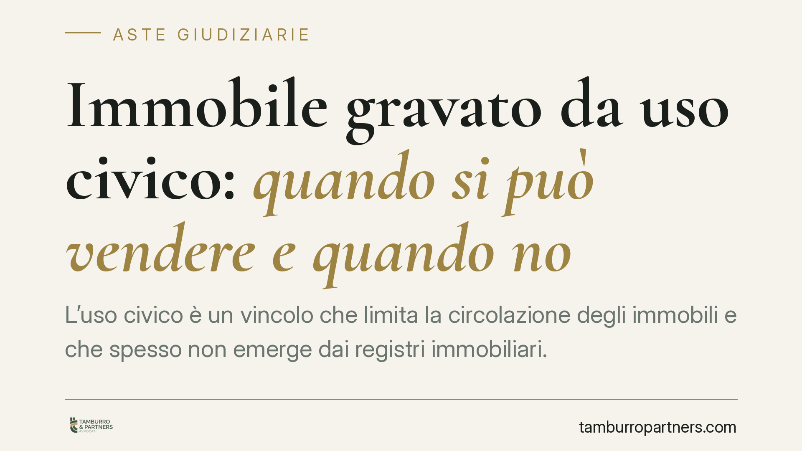

Immobile gravato da uso civico: quando si può vendere e quando no
L'uso civico è un vincolo che limita la circolazione degli immobili e che spesso non emerge dai registri immobiliari. Capire se un bene sia alienabile o inalienabile è decisivo, soprattutto in asta: la differenza passa tra una vendita valida con vincolo che permane e una vendita radicalmente nulla. Ecco il quadro, i limiti e le verifiche indispensabili prima di acquistare.

Di cosa parliamo
L'uso civico è un diritto di godimento collettivo su beni immobili, riconosciuto a favore di una comunità (ad esempio pascolo, legnatico, semina). La materia è ancora oggi regolata dal R.D. 1766/1927 e riordinata dalla L. 168/2017, che ha qualificato i domini collettivi come patrimonio della collettività.
La domanda pratica è una sola: un immobile gravato da uso civico si può vendere? La risposta dipende dalla natura del bene. Ed è una distinzione che cambia tutto, in particolare per chi acquista in asta giudiziaria.
Inquadramento normativo
Occorre distinguere due situazioni radicalmente diverse.
Terreno privato gravato da uso civico. Qui il bene è di proprietà privata, ma su di esso insiste un diritto di godimento della collettività. La vendita è valida: il bene è alienabile ed espropriabile. Tuttavia il vincolo non si estingue con il trasferimento. L'acquirente subentra in un immobile che resta gravato, salvo le procedure di affrancazione o legittimazione previste dalla legge.
Demanio civico (o dominio collettivo). Si tratta di beni destinati stabilmente all'uso della collettività, qualificati dalla L. 168/2017 come inalienabili, imprescrittibili e inusucapibili. La loro vendita è radicalmente nulla, perché ha a oggetto un bene fuori commercio. Nessun atto, giudiziale o notarile, può renderla valida.
Implicazioni nelle aste giudiziarie
Il punto più delicato riguarda l'effetto purgativo della vendita forzata. Di regola, con il decreto di trasferimento si cancellano ipoteche e pignoramenti gravanti sul bene (art. 586 c.p.c.). Questo effetto, però, non sana la vendita di un bene demaniale civico: se l'immobile aggiudicato appartiene al demanio collettivo, la vendita resta nulla nonostante il decreto. L'effetto purgativo opera sui vincoli cancellabili, non sulla natura stessa del bene.
Attenzione: l'uso civico può non risultare dai registri immobiliari né dalla documentazione ipocatastale. Spesso emerge soltanto da accertamenti presso il Comune o la Regione. Un bene può quindi apparire libero e, in realtà, essere gravato o addirittura demaniale.
La tutela dell'aggiudicatario
Il regime della garanzia nella vendita forzata segue regole proprie, distinte da quelle della compravendita ordinaria. Gli artt. 2919-2929 c.c. disciplinano gli effetti della vendita coattiva e l'evizione dell'aggiudicatario: in caso di evizione, l'acquirente può agire secondo le regole peculiari della procedura esecutiva, non invocando senz'altro i rimedi contrattuali tipici.
Va quindi tenuta distinta questa disciplina da quella del contratto di diritto privato. Nella compravendita ordinaria tra privati potrebbero rilevare l'art. 1482 c.c. (vendita di cosa gravata da oneri o diritti di godimento non apparenti) o, in presenza di raggiri sulla reale condizione del bene, l'art. 1439 c.c. sul dolo. Nella vendita forzata, invece, il perno è il regime dell'evizione ex artt. 2919 ss. c.c. Confondere i due piani porta a impostare male la tutela.
Sul rapporto tra vincoli demaniali collettivi e procedure espropriative si registrano pronunce della Corte costituzionale e orientamenti della Cassazione a Sezioni Unite. [DA VERIFICARE in revisione: Corte cost. 119/2023 e Cass. SU 12570/2023 — confermare numero, anno e contenuto della massima prima della pubblicazione; in mancanza, mantenere il riferimento in forma generica come "un orientamento della Cassazione a Sezioni Unite".]
Cosa fare in concreto
- Accertare la natura del bene prima di qualsiasi offerta: distinguere se si tratta di terreno privato gravato (alienabile) o di demanio civico (fuori commercio).
- Richiedere la certificazione al Comune e alla Regione sull'esistenza e sulla natura dell'uso civico: il vincolo spesso non compare nelle visure.
- Incrociare visura catastale, visura ipotecaria e ispezione storica con gli accertamenti presso gli enti, perché i registri immobiliari da soli non bastano.
- Leggere con attenzione la perizia di stima in asta: verificare se il perito ha affrontato il tema dell'uso civico e con quale esito.
- Agire tempestivamente in caso di criticità: i rimedi esperibili, specie nella vendita forzata, sono soggetti a termini stringenti e vanno valutati senza ritardo.
---
Contributo informativo a cura di Tamburro & Partners - Avv. Giuseppe Tamburro. Non costituisce parere legale.
Comprare bene all’asta si può.
Se vuoi acquistare un immobile all’asta in sicurezza o difendere un esecutato, scrivi allo studio. Ti rispondiamo entro un giorno lavorativo.